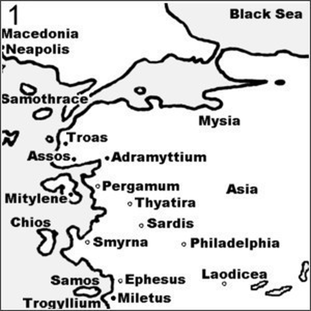
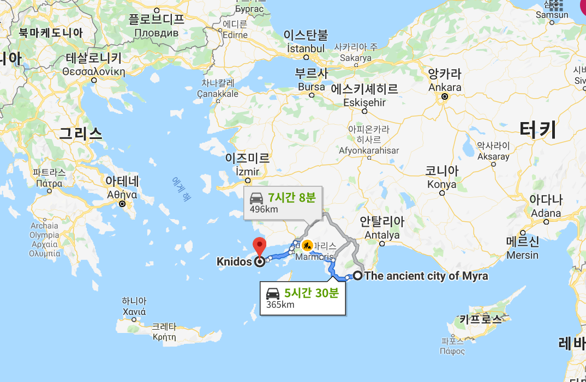
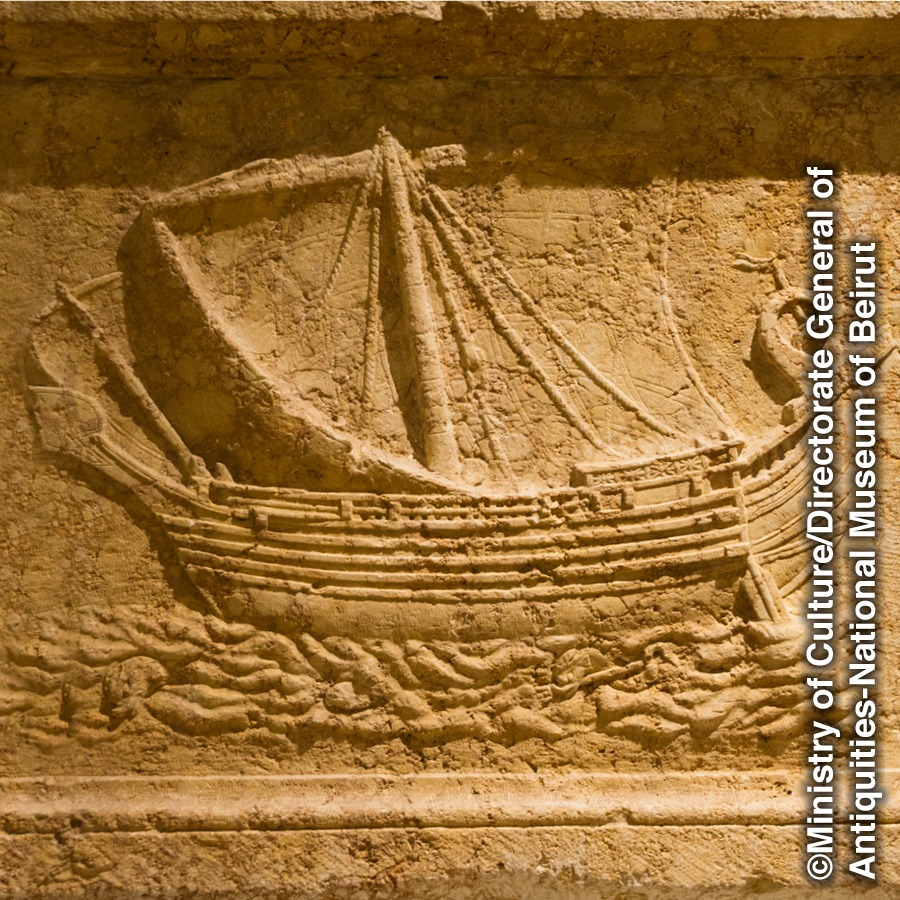
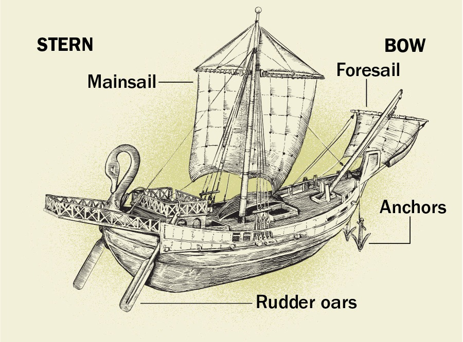
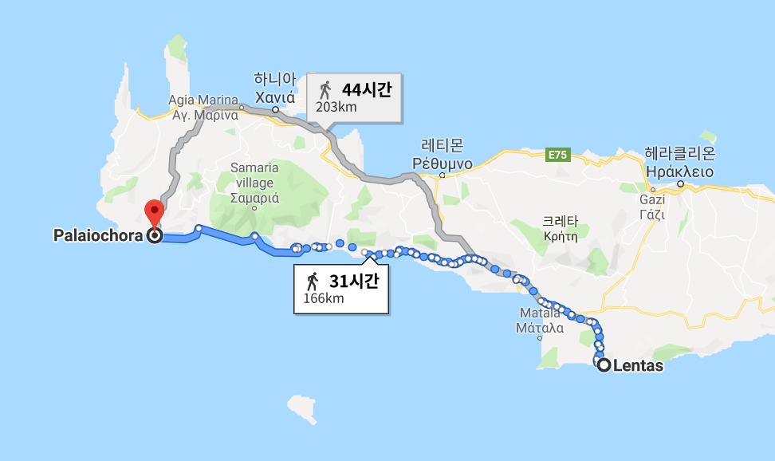

바울 난파기 - 사도행전 27장 흥미위주로 풀어 읽기 (상편)
게시: 2019-08-19T06:30:42+09:00
성경은 믿지 않는 자들에게도 굉장히 흥미진진한 역사적 자료입니다. 특히 신약의 경우 어떤 사건 발생 이후 100년이 지나지 않은 시점의 사람들에 의해 씌여 당시의 일상이나 사회상 등에 대해서 자세히 묘사되는 부분이 많기 때문에 더욱 그렇습니다. 물론 아우구스투스에 의해 인구 조사가 이루어지면서 모든 주민들이 출생지로 되돌아가야 했다는 부분 등이 역사적 사실과 어긋난다고 논쟁거리가 되는 경우도 있긴 하지요. 재판을 위해 팔레스타인 땅에서 소아시아를 거쳐 로마로 호송되던 바울이 난파를 겪은 이야기가 주 내용인 사도행전 27장은 당시 지중해 선박 항해에 대해 많은 부분이 정말 생생하게 묘사되어 있습니다. 다만 성경 원저자 혹은 번역자가 너무 밋밋하고 불친절하게 서술을 해놓아서 그 흥미진진한 이야기를 하품이 나올 수준으로 만들어 놓은 것이 너무 아쉽지요. 그래서 제가 한번 (불경스러움을 무릅쓰고) 믿음 대신 흥미위주로 풀어서 써봤습니다. 아래는 사도행전 27장을 저처럼 그리스-로마식 표기가 더 익숙한 분들을 위해 인명과 지명을 그리스 역사책에 흔히 나오는 식으로 수정하고 (가령 율리오 --> 율리우스, 아드라뭇데노 --> 아드라미티움) 좀더 이야기식으로 제 임의로 풀어 쓴 것입니다. 사도행전 27 원본은 https://www.bible.com/ko/bible/86/ACT.27.KLB 에서 '현대인의 성경' 버전을 읽으실 수 있습니다.
-------------------------
바울이 로마 시민권자임을 내세워 로마에서 재판을 받겠다고 주장했기 때문에, 바울은 다른 죄수 몇몇과 함께 로마로 압송되게 됩니다. 로마로 가자면 선박편을 이용해야 했는데, 바울과 죄수들을 로마로 압송할 근위대(the Augustan cohort) 소속 로마군 백인대장(centurion)인 율리우스(Julius)는 케사레아(Caesarea Maritima)에서 배편을 구했습니다. 당시 백인대장 휘하 80여명 정도의 군부대가 이동할 때에는 전세 수송선을 이용하지 않고 그냥 부대장이 알아서 구한 배편을 이용하도록 되어 있었나 봅니다. 당시 팔레스타인 해변의 케사레아는 그다지 번화한 항구는 아니었고, 그래서 이탈리아로 곧장 가는 배는 구할 수 없었습니다. 율리우스는 일단 좀더 많은 선박편이 집결하는 에페수스(Ephesus)나 밀레투스(Miletus) 등의 주요 항구가 즐비한 소아시아 쪽으로 가서 배편을 구하기로 합니다. 그래서 구한 것이 아드라미티움(Adramyttium) 시에서 온 어떤 선박이었습니다. 율리우스와 그의 부대는 바울과 죄수들을 이 배에 태우고 출항했습니다. (27:1 ~ 27:2)

(성서에는 '아드라뭇데노'라는 이름으로 나온 Adramyttium의 위치는 위에서 보시는 바와 같이 오늘날 터키 서해안 북쪽 지역입니다. 페르가뭄 바로 위에 있습니다. 다만 오해하시면 안 되는 것이, 바울이 탔던 첫 배인 저 아드라미티움 선박은 거기서 온 배일 뿐 바울이 거기서 출항을 했다는 소리가 아닙니다. 바울은 성서에 '가이사랴'라고 나온 팔레스타인 해안 도시인 케사레아에서 출항했습니다.)
케사레아에서 시돈(Sidon)까지는 하루 밖에 걸리지 않았습니다. 여기서 율리우스는 바울에게 특별한 친절을 베풉니다. 이 항구에 바울을 잠시 내려주고 바울의 친구들을 방문하도록 허락해준 것입니다. 시돈 항에서 출항하여 소아시아 해안, 그러니까 지금의 터키 서해안으로 향하던 이 배는 역풍을 만나게 되어 키프로스 섬과 킬리시아(Cilicia)와 팜필리아(Pamphylia) 앞 바다를 지나 리키아(Lycia) 지방의 미라(Myra) 항에 도착하게 됩니다. 여기서 백인대장 율리우스는 이집트 알렉산드리아에서 출발하여 이탈리아로 향하던 화물선 한 척을 발견합니다. 이 화물선에는 곡물이 실려있었는데, 당시 이탈리아는 나날이 늘어나는 인구를 지탱하기 위해 지중해의 곡창지대인 이집트에서 곡물을 수입하고 있었으므로 그런 화물선들이 꽤 많았습니다. 아우구스투스의 시대에 이집트는 로마에 14만톤의 곡물을 공급했는데, 네로 시대에는 그 양이 42만톤까지 늘어났습니다. 율리우스는 자신의 부대와 바울 등의 죄수를 이 알렉산드리아 곡물 수송선에 옮겨 태웁니다. (27:3 ~ 27:6)

(밤에는 항해를 안 하고 그냥 하루에 12시간만 항해를 한다고 해도, 3일이면 도착할 수 있는 거리입니다.)
이 화물선의 속도는 그다지 빠르지 않았습니다. 당시 지중해의 범선은 빨라야 5~6노트(약 시속 10km)에 불과했거든요. 이 배는 며칠 동안을 천천히 항진하고 난 뒤에야 고작 300km 떨어진 크니두스(Cnidus) 섬 앞 바다에 이르렀는데, 그나마 여기서 바람이 맞지 않아 곧장 에게 해를 건너 서쪽의 그리스로 향하지 못하고 남쪽으로 방향을 틀어야 했습니다. 즉 삼모니움(Salmone, Sammonium) 앞을 지나 크레테 섬 남해안의 라사이아(Lasaea, Lasaia, Lisia)에서 가까운 ‘아름다운 항구’(Kaloi Limenes, Fair Havens)라는 곳에 겨우 닿았습니다. (27:7 ~ 27:8)
바울과 로마군을 태운 화물선은 여기서 며칠을 보내며 바람의 방향이 유리해지길 기다렸습니다. 그러나 이젠 시기가 너무 늦어버렸습니다. 속죄일(Yom Kippur, the Day of Atonement, 유대인들에게 신성한 날로서 25시간 금식을 행했습니다)까지도 지나버린 다음이었던 것입니다. 원래 지중해는 늦가을부터 겨우내 바다가 거칠어 당시의 원시적인 범선은 항해가 불가능하여, 펠로폰네소스 전쟁 때도 겨울에는 해상 작전이 완전히 중단되곤 했습니다. 4세기 경의 로마인 베게티우스(Vegetius)의 기록에 따르면 지중해는 '몇 달간은 항해하기 매우 좋고, 몇 달간은 위험하며, 나머지는 완전히 불가능'했습니다. 베게티우스에 따르면 항해하기 좋은 기간은 5월 27일부터 9월 14일까지, 그리고 항해하기 위험한 기간은 9월 15일부터 11월 11일까지, 그리고 다음해 3월 11일부터 5월 26일까지였습니다. 위에서 언급된 유대인들의 속죄일은 현대적 달력에 따르면 9월 중순에서 10월 중순 사이였습니다. 그러니까 바울의 화물선이 '아름다운 항구'에 발이 묶여있던 저 시기는 항해가 불가능한 기간은 아니었지만 확실히 항해하기 위험한 기간이었습니다. (27:9)
(한글 성경에는 그냥 '금식하는 때도 이미 끝난 시기'라고만 나와 있어서 대체 뭔소리인가 싶습니다만, 영어 성경에는 the Day of Atonement, 즉 속죄일이라고 나옵니다. 유대인들은 욤 키푸르(Yom Kippur)라고 한답니다. 당시 유대인들이 어떤 달력을 썼는지 잘 모르겠습니다만, 요즘 달력으로는 마치 음력처럼 9월 중순이 되었다 10월 중순이 되었다 왔다갔다 합니다.)

(당시 지중해를 항행하던 화물선의 모습을 그린 부조입니다. 저렇게 사각돛 1개와 선수돛만 가지고는 바람을 거슬러 항행하는 것이 불가능합니다.)

(위의 부조를 참조하여 복원한 당시 화물선의 모습입니다. 특히 고물 쪽에 양쪽으로 늘어선 노는 전진을 위한 것이 아니라 방향을 바꾸기 위한 키 역할을 하는 노입니다. 요즘 같은 방향타는 이때 아직 발명되지 않았습니다.)
그런데 여기서 바울이 뜬금없이 오지라퍼가 됩니다. 바울은 원래 율법학자였고, 생업으로 배운 기술은 텐트 직공이었습니다. 항해와는 전혀 무관한 landsman, 즉 뭍사람에 불과했습니다. 물론 그리스 본토와 소아시아 지방으로의 전도 여행을 통해 지중해 바다의 특성을 어느 정도 이해는 하고 있었겠으나 그건 어디까지나 승객으로서의 경험이었을 뿐 바울은 전혀 seaman, 즉 뱃사람이 아니었습니다. 게다가 그의 신분은 한낱 죄수였지요. 그런데도 그는 자신의 호송을 책임진 백인대장 율리우스를 비롯한 사람들에게 '지금은 바다로 나가서는 안 된다, 그랬다가는 배와 화물은 물론 우리 목숨까지 위험하다'라고 경고했습니다. (27:10) 하지만 백인대장 율리우스도 로마에서 팔레스타인으로 올 때 걸어온 것은 분명히 아니었습니다. 하물며 평생 바다에서 밥벌이를 한 선원들 앞에서 그런 소리를 한 것은 확실히 공자님 앞에서 문자를 쓴 것이긴 했습니다. 율리우스는 당연히 전문가인 키잡이(pilot, helmsman, kybernetes, kubernetes)와 결정권을 가진 선주(captain, shipowner, naukleros)에게 의견을 물었는데, 이들은 위험하기는 하지만 짧은 거리의 항해는 충분히 가능하다고 대답했고, 율리우스도 그 말을 믿었습니다. 여기서 키잡이를 한글 성경에는 '선장'이라고 번역을 했는데, 이건 번역이 잘못되었다기 보다는 서양 문물에 대해 잘 모르던 당시 한국 사람들이 이해하기 쉽도록 정말 잘 된 번역이라고 박수를 칠 만한 번역입니다. 원래 그리스 시대부터 당시 선박들에는 두 명의 지휘자가 있었습니다. 비즈니스 측면에서의 최종 지휘권을 가진 사람은 보통 '선장'이라고 번역되는 나우클레로스(naukleros)라는 사람이었는데, 이 사람은 사실 뱃사람이 아니라 그냥 돈이 많은 사업가로서 그 배의 소유주였습니다. 그에 비해 보통 '키잡이'라고 번역되는 쿠베르네테스(kubernetes)라는 사람은 당시 선박의 방향을 조종하는 선미 방향타를 젓는 뱃사람으로서, 이 사람이 기술적 측면에서의 지휘관이었습니다. 이 키잡이가 요즘 기준으로 볼 때 선장이 맞습니다. (27:11)
(요즘 가장 핫한 컨테이너 기술을 효율적으로 운용할 수 있게 해주는 구글의 오픈 소스 소프트웨어인 쿠버네티스의 이름도 바로 이 키잡이를 뜻하는 그리스어에서 온 것입니다. 구글에서는 쿠버네티스의 로고를 저런 조타륜으로 정했지만, 실제 그리스의 키잡이들에게 저런 조타륜은 전혀 낯선 물건이었습니다. 저런 조타륜은 훨씬 후대에 발명된 것이고 그리스의 키잡이들은 방향을 바꾸기 위해 고물에 장착된 노를 저어야 했습니다.)
이들은 어떻게든 '아름다운 항구'에서 출항하여 포에닉스(Phoenix) 항으로 가기로 결정합니다. 성경만 보면 키잡이와 선주가 마치 어리석거나 욕심이 많아서 현명한 바울의 말을 듣지 않은 듯한 인상을 받기가 쉽습니다만, 사실 키잡이와 선주로서는 매우 합리적인 결정을 한 것입니다. '아름다운 항구'라는 곳은 현재도 큰 항구로 발전하지 못한 그야말로 어촌 정도되는 항구에 불과했습니다. 배가 항구에서 안전하게 있으려면 배를 해변 마른 땅 위에 끌어올려두든가 천연적인 것이든 인공으로 쌓은 것이든 거친 파도를 막아줄 방파제가 있어야 합니다. 그러나 '아름다운 항구'라는 곳은 현재도 큰 항구로 발전하지 못한 것으로 보아 그런 천연 방파제가 없는, 작은 어촌 정도되는 항구였던 모양입니다. 그리고 나중에 나오겠습니다만 바울이 탄 화물선에는 많은 곡물 외에도 선원과 승객이 모두 합해 276명이라고 된 것으로 보아, 꽤 큰 배였던 것이 틀림없습니다. 18세기 영국 해군 기준으로도 200~300명의 승조원을 태운 배는 적어도 700톤에서 1400톤 정도 되는 제5급함, 즉 대형 프리깃함에 해당하는 배였거든요. 물론 수십 문의 쇳덩이 대포들을 싣고 무보급으로 6개월 이상 대양에서의 작전이 가능했던 18세기 프리깃함과 기껏해야 지중해 연안만을 간신히 기어다녔던 기원후 1세기 경의 화물선을 비교해서는 안 되겠지요. 당시 지중해를 항해하던 화물선들은 대개 배수량이 70톤에서 150톤 정도 되는 것들이 많았지만 큰 배는 “10,000개의 암포라(amphora, 포도주나 올리브유를 담는 토기 항아리) 수송선” 즉 500톤 정도 되는 것도 있었습니다. 바울이 탔던 화물선의 배수량이 어느 정도인지는 모르겠으나, 뭍 위로 끌어올릴 정도의 작고 가벼운 배는 아니었던 것은 확실합니다. 즉, 겨울의 거친 파도에 그대로 노출된 '아름다운 항구'에 그 배를 놓아둔 채 겨울을 난다는 것은 그 선주에게는 그냥 망하라는 이야기나 똑같은 것이었을 것입니다. 그래서 키잡이와 선주는 그 근처에서 가장 가깝고 또 그나마 안전한 항구인 포에닉스로 배를 몰고 가기로 결정했던 것입니다. 이 두 항구 사이의 거리는 고작 160km 정도로서, 바람만 괜찮으면 해안에 바싹 붙어서 가도 하루면 충분히 갈 수 있는 거리였습니다. (27:12)

(설마 이 하루짜리 항해에서 사고가 생긴다고 해도 얼마나 큰 사고가 생기겠습니까...만은, 전쟁터에 나갈 때는 한번 기도하고, 바다에 나갈 때는 두번 기도하라는 말이 괜히 나온 것이 아닙니다. 물론 결혼을 할 때는 세번 기도를 하셔야 합니다. 여러분, 결혼이 그렇게 위험... 헙 !) (계속)
Source : https://www.simplybible.com/dmaps.htm https://graceofourlord.com/tag/mysia/ https://www.conformingtojesus.com/charts-maps/en/paul%27s_journey_to_rome_map.htm https://www.jw.org/en/publications/books/bearing-thorough-witness/preaching/paul-shipwreck/ https://www.jw.org/en/publications/magazines/watchtower-no5-2017-september/did-you-know/ https://www2.rgzm.de/navis/Themes/Commercio/CommerceEnglish.htm